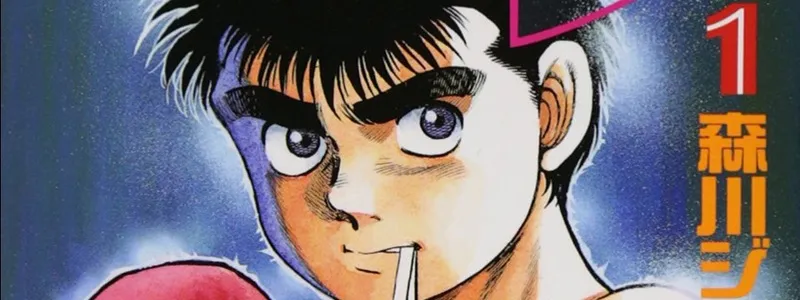

Batman vs. Deadpool — Crossover épico com a DC

Pela primeira vez em mais de 20 anos, Marvel e DC unem forças novamente com dois one-shots: Deadpool/Batman #1 (Marvel) chega em 17 de setembro de 2025; seguido por Batman/Deadpool #1 (DC) em novembro. Escritas por Zeb Wells e Grant Morrison, respectivamente, com arte de Greg Capullo e Dan Mora.
Com isso, elas vão colocar fim a um hiato que começou em 2003, quando a Liga da Justiça da América se encontrou com os Vingadores. Enquanto as duas empresas fazem segredo sobre o que esperar das tramas, elas garantem que ambas vão ser bastante criativas e divertidas.
NOVO MANGÁ PELA MPEG: “HAJIME NO IPPO”

sábado, 30 de agosto de 2025, a editora MPEG divulgou, durante seu evento MPEG Fest, que publicará no Brasil o impensável e improvável mangá Hajime no Ippo, de Joji Morikawa. Ele será lançado no formato 2 em 1, custará R$ 42,90 (sim, R$ 42,90 por 400 páginas) e virá com a mesma qualidade dos demais mangás da MPEG. A empresa discutiu durante meses com a Kodansha para conseguir esse preço e está garantido para a primeira parte do contrato (15 volumes iniciais). A previsão de lançamento é para SETEMBRO DE 2025, mas ele já disponível para compra no MPEG Fest e na loja online da editora.
Homem-Aranha & Wolverine #3 leva heróis à Terra Selvagem e revela novos vilões

Ao longo das décadas, o Wolverine já teve muitas identidades, mas agora o mutante assume sua alcunha mais letal como o novo Soldado Invernal dos quadrinhos da Marvel. Essa é a premissa de Ultimate Wolverine, HQ que foi anunciada pela editora na New York Comic-Con.Com roteiro de Chris Condon e arte de Alessandro Cappuccio, o quadrinho chegará às bancas dos EUA em janeiro de 2025, apresentando a nova versão do Carcaju.Com uniforme bastante parecido com o do Bucky Barnes original, Logan ganhou até uma focinheira, mostrando que o mutante está mais sanguinário do que nunca.O Universo Ultimate faz parte da mais recente reformulação da Marvel nos quadrinhos, com heróis como Homem-Aranha e Pantera Negra em novos gibis sob o selo.
Wolverine se torna o novo Soldado Invernal em HQ

Ao longo das décadas, o Wolverine já teve muitas identidades, mas agora o mutante assume sua alcunha mais letal como o novo Soldado Invernal dos quadrinhos da Marvel. Essa é a premissa de Ultimate Wolverine, HQ que foi anunciada pela editora na New York Comic-Con.Com roteiro de Chris Condon e arte de Alessandro Cappuccio, o quadrinho chegará às bancas dos EUA em janeiro de 2025, apresentando a nova versão do Carcaju.Com uniforme bastante parecido com o do Bucky Barnes original, Logan ganhou até uma focinheira, mostrando que o mutante está mais sanguinário do que nunca.O Universo Ultimate faz parte da mais recente reformulação da Marvel nos quadrinhos, com heróis como Homem-Aranha e Pantera Negra em novos gibis sob o selo.
Mangá de ‘Boruto: Two Blue Vortex’ tem melhor capítulo da saga em meses

Nos últimos meses, os capítulos de Boruto: Two Blue Vortex têm sido criticados pelos leitores por conta de diálogos mais extensos do que deveriam e a ausência de momentos de ação. No entanto, o capítulo 24 do mangá, lançado neste mês, veio para acabar com as queixas dos fãs, entregando a adrenalina que todo mundo estava sentindo falta na série. Sem fazer muita cerimônia para dar início a ação, o capítulo 24 do mangá de Boruto já abre com um plot twist dos grandes e um dos melhores momentos da história em algum tempo. O filho de Naruto já está exausto de batalhar com Jura, o líder das Árvores Divinas, quando seu irmão adotivo e rival Kawaki entra em cena, liberando poderes com menos limitações agora.
Kaiju No. 8 se despede: mangá chegará ao fim em 2025

A jornada de Kafka Hibino está prestes a se encerrar. Na última página do capítulo 127 de Kaiju No. 8, lançado nas últimas semanas no Japão, foi anunciado que o mangá de Naoya Matsumoto terminará no capítulo 129.
Com isso, a coleção completa deve contar com 16 volumes encadernados. No Brasil, a série é publicada pela editora Panini, atualmente no volume 14. Os capítulos mais recentes também podem ser lidos gratuitamente no MANGAPlus, aplicativo oficial da editora japonesa Shueisha.